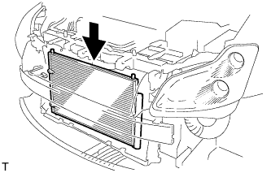
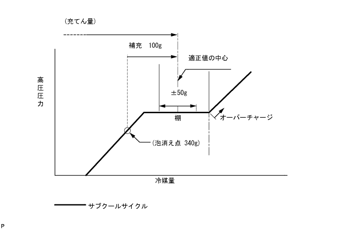
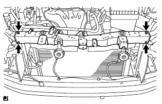
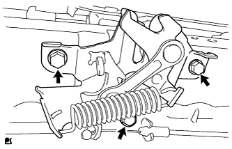
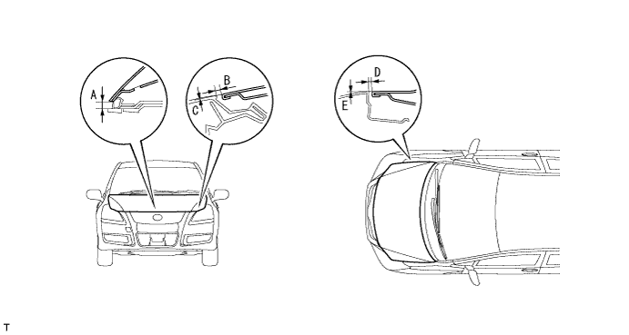
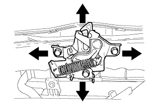
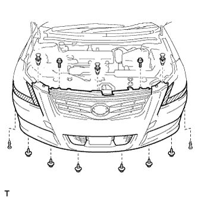

Cooler Condenser Assembly (Engine Type 2AZ-FE) Installation |
| 1. Condenser Assembly (with Receiver) Installation |
 |
Insert the condenser assembly (with receiver) from above.
| 2. Install Discharge Hose Sub-assembly |
 |
Remove the vinyl tape wrapped around the joints of the discharge hose and condenser assembly (with receiver).
Apply sufficient compressor oil (ND-OIL8) to a new O-ring and install it to the discharge hose.
Install the discharge hose to the condenser assembly (with receiver) with the bolt.
| 3. Air Conditioner Tube & Accessory Assembly Installation |
 |
Remove the vinyl tape wrapped around the joints of the air conditioner tube & accessory assembly and condenser assembly (with receiver).
Apply sufficient compressor oil (ND-OIL8) to a new O-ring and install it to the air conditioner tube & accessory assembly.
Install the air conditioner tube & accessory assembly to the condenser assembly (with receiver) with the bolt.
| 4. Charge Refrigerant HFC-134a (R134a) |
Evacuate the system using a vacuum pump.
Charge with refrigerant HFC-134a (R134a).

| 5. Warm Up Engine |
| 6. Inspect for Refrigerant Gas Leaks |
After charging the refrigerant gas, inspect for refrigerant gas leaks using a halogen leak detector.
| 7. Install Fan Shroud NO.2 |
 |
Install fan shroud No.2 to the radiator assembly with the 2 bolts.
Using the clamp, install the water bypass hose No.3 to the fan shroud No.2.
Install the 2 radiator support cushions to the fan shroud No.2.
| 8. Install Radiator Support Assembly |
 |
Install the radiator support assembly with the 4 bolts.
 |
Connect the 2 horn assembly connectors.
| 9. Install Hood Lock Assembly |
 |
Install the hood lock assembly with the 3 bolts.
 |
Attach the hood lock control cable assembly to the 2 clamps.
| 10. Inspect Hood Sub-assembly |
Check that each clearance dimension is within the reference value.

| A | 6.2±1.5 mm | D | 3.8±1.5 mm |
| B | 4.3±1.5 mm | E | 0±1.0 mm |
| C | 0.1±1.5 mm | ||
| 11. Adjust Hood Sub-assembly |
Adjustment in forward/rearward direction of hood and left/right direction at rear end
 |
Loosen the bolts of the bonnet (hood) hinge assembly and adjust.
Vertical adjustment of left and right front end of hood
 |
Turn the 2 cushions on each of the left and right sides to adjust the height.
Vertical and lateral adjustment of front end of hood
 |
Loosen the 3 bolts of the bonnet (hood) lock assembly and adjust.
| 12. Connect Water Bypass Hose |
 |
Install the water bypass hose to the radiator support assembly with the 2 bolts and 2 clamps.
| 13. Install Front Bumper Assembly |
Connect the connectors.
 |
Engage the 8 claws (4 each on LH/RH).
 |
Install the front bumper assembly with the 5 clips, 2 bolts and 6 screws.
 |
Install the pin hold clip.
| 14. Install Radiator Grille Protector |
 |
Install the 2 radiator grille protectors.
| 15. Install Radiator Upper Air Deflector |
Install the radiator upper air deflector with the 8 clips.